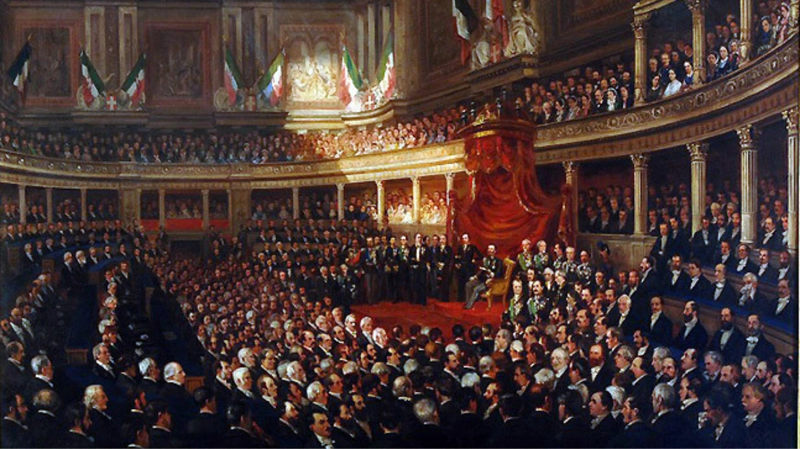
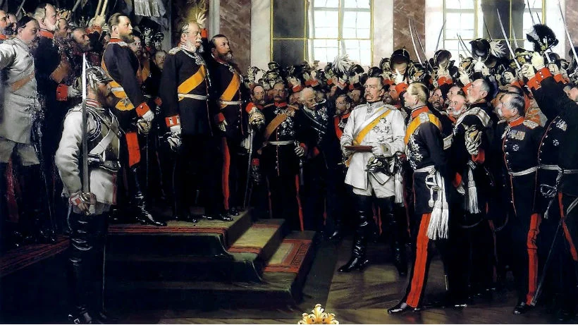
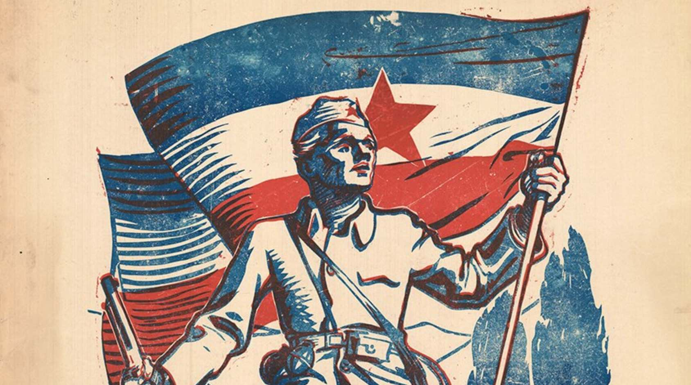

Nationalism

Nationalism in Europe refers to the political, social, and cultural ideology that emerged during the late 18th and 19th centuries, which emphasizes the importance of a shared identity based on language, culture, history, and sometimes religion. This ideology calls for the unity and self-determination of people who see themselves as a distinct nation. Nationalism played a significant role in shaping the political landscape of Europe, contributing to the formation of modern nation-states, revolutions, and conflicts. It arose in part as a reaction against the old monarchies, empires, and multinational states that dominated Europe before the rise of democratic ideals. Nationalism inspired people to seek independence or to unify smaller regions under one national identity, ultimately leading to significant changes in European politics, particularly in countries like Italy and Germany.
One of the most prominent examples of nationalism in Europe is the unification of Italy, known as the Risorgimento, which took place during the 19th century. Prior to unification, Italy was divided into several smaller states and kingdoms, often under foreign control. Italian nationalism emerged as people in these regions sought to create a single, unified Italian nation. Leaders like Giuseppe Garibaldi, Count Camillo di Cavour, and Giuseppe Mazzini played pivotal roles in rallying Italians around the cause of independence and unity. Through diplomatic maneuvers and military campaigns, Italy was gradually unified by 1871 under the Kingdom of Italy. The Risorgimento is an essential example of how nationalist movements shaped modern European nations, as it was driven by the desire for self-determination, cultural pride, and national sovereignty.
One of the most important reasons to study nationalism is its critical role in shaping the modern nation-state system. Nationalism was the driving force behind the creation of unified, sovereign states, particularly during the 19th century. Before nationalism took hold, Europe was dominated by empires, kingdoms, and dynasties, many of which ruled over diverse populations with distinct languages, cultures, and identities. The rise of nationalist movements in places like Italy, Germany, and Greece led to the consolidation of smaller states or regions into single, unified nations, based on shared cultural, linguistic, or ethnic identity. This transformation not only redefined the political boundaries of Europe but also laid the foundation for modern political systems and ideologies, influencing the structure of states and governance worldwide. Understanding how nationalism contributed to the development of nation-states helps us grasp the political geography of today’s world and why national identity remains so significant in global affairs.
Nationalism has been a driving force behind some of the most significant historical events and conflicts, making it essential to study for understanding the dynamics of international relations and warfare. In the 19th and 20th centuries, nationalist fervor played a major role in wars, revolutions, and movements for independence. The unification of Italy and Germany, both driven by nationalist ambitions, fundamentally altered the balance of power in Europe. Moreover, nationalism was a contributing factor to the outbreak of World War I, as rival nationalisms in the Balkans and elsewhere clashed with the interests of multi-ethnic empires like Austria-Hungary. Beyond Europe, nationalist movements in colonies across Africa, Asia, and Latin America led to struggles for independence from imperial powers in the 20th century. Learning about nationalism allows us to better understand the causes and consequences of these pivotal events, as well as how nationalist ideologies can ignite conflict or inspire movements for self-determination.
A final reason to study nationalism is its continued relevance in contemporary global politics. Although nationalism was a dominant force in the 19th and 20th centuries, it remains a potent and sometimes contentious issue today. In various regions around the world, nationalist movements still seek to create or defend independent states, as seen in the cases of Catalonia, Scotland, and Kurdistan. Nationalism also plays a crucial role in modern debates about immigration, globalization, and the rise of populist politics. In many countries, political leaders use nationalist rhetoric to rally support, emphasizing national identity, sovereignty, and protection from perceived external threats. In the European Union, the resurgence of nationalism has led to challenges like Brexit, where a nationalist movement successfully campaigned for Britain to leave the EU. Studying the history and evolution of nationalism provides insight into these ongoing political dynamics, helping us understand how national identity continues to influence both domestic and international policies in today’s interconnected world.
The unification of Italy in the 19th century is one of the most prominent examples of how nationalist sentiments can fuel the creation of a unified nation-state. Before unification, the Italian peninsula was fragmented into several states, many of which were under foreign control, such as the Austrian Empire's domination of the northern regions. Nationalist leaders like Giuseppe Mazzini, Giuseppe Garibaldi, and Count Camillo di Cavour played critical roles in the movement for Italian unification, also known as the "Risorgimento." Mazzini, an early advocate for Italian unity, inspired many with his vision of a republican Italy. However, it was Cavour, the Prime Minister of the Kingdom of Sardinia, who used diplomacy and strategic alliances to set the unification process in motion. Cavour's alliance with France led to the defeat of Austrian forces in northern Italy, while Garibaldi's military campaign in the south, known as the Expedition of the Thousand, resulted in the conquest of Sicily and Naples. In 1861, the Kingdom of Italy was officially proclaimed under King Victor Emmanuel II. This unification exemplifies how nationalist ideologies can dismantle old political structures and replace them with a new, unified national identity. More about Unification of Italy
Cr.: Wikipedia
The unification of Germany, completed in 1871, stands as another landmark achievement of nationalism in European history. Like Italy, the German-speaking regions were fragmented into a collection of independent states, many of which were part of the loosely organized Holy Roman Empire. Nationalism grew in the early 19th century, fueled by a shared language, culture, and history among the German people. Otto von Bismarck, the Prussian Chancellor, was instrumental in harnessing nationalist sentiments to achieve the goal of unifying Germany. Through a combination of diplomacy, military strategy, and careful manipulation of European powers, Bismarck led Prussia in a series of wars that paved the way for unification. The Danish War of 1864 secured Schleswig and Holstein, while the Austro-Prussian War of 1866 eliminated Austria as a competitor for influence over the German states. The Franco-Prussian War of 1870-71 united the northern and southern German states in a common cause, culminating in the declaration of the German Empire in 1871, with the Prussian king crowned as Emperor Wilhelm I. Bismarck's success illustrates how nationalist aspirations can be politically engineered to create a powerful, centralized state. More about German Unification
Cr.: Massolit
The unification of Norway and Sweden in 1814 offers an example of how nationalism can take a different course, leading to a union between states rather than the creation of a single, independent nation. After the Napoleonic Wars, Norway was ceded to Sweden as part of the Treaty of Kiel, despite Norway’s strong desire for independence. Norwegian nationalists opposed the union with Sweden and declared independence, even drafting a constitution. However, after a brief conflict with Sweden, Norway agreed to enter a personal union with Sweden, whereby both countries maintained separate legal and governmental systems but shared a monarch and foreign policy. The union was largely peaceful, but nationalist tensions simmered for nearly a century, as many Norwegians continued to push for complete independence. This nationalist drive finally culminated in 1905 when Norway peacefully dissolved the union with Sweden and became an independent kingdom. This example shows how nationalism can also manifest in the pursuit of autonomy within a union, rather than the outright creation of a new state. More about Unification of Sweden and Norway
Yugoslavia’s formation in the aftermath of World War I offers a complex example of nationalism driving both unification and division. After the dissolution of the Austro-Hungarian Empire in 1918, the South Slavic peoples sought to create a unified state that would include Serbs, Croats, Slovenes, and other groups. The Kingdom of Serbs, Croats, and Slovenes, later renamed Yugoslavia in 1929, was established as a response to nationalist aspirations for a state that would unite the South Slavic peoples under a single government. While the creation of Yugoslavia represented a significant achievement for nationalist movements in the Balkans, it also highlighted the difficulties of balancing the competing nationalist sentiments of different ethnic groups within the same state. Tensions between these groups persisted throughout the 20th century and ultimately contributed to Yugoslavia’s violent breakup in the 1990s. This example illustrates the dual nature of nationalism: while it can bring people together to form new political entities, it can also foster divisions that lead to conflict and disintegration. More about Yugoslavia
Cr.: Tribune
Nationalism profoundly reshaped the social fabric of Europe, influencing the way individuals understood their place within society. In the age of nationalism, people began to identify themselves more closely with their nation, creating a sense of collective identity based on shared language, culture, history, and often ethnicity. This shift was particularly significant in multi-ethnic empires like the Austro-Hungarian or Ottoman Empires, where various ethnic groups sought to assert their distinct national identities. In many regions, the rise of nationalist sentiments led to social movements that aimed to unify people under a common national banner, fostering solidarity among those who shared a national consciousness. This collective identity was reinforced through cultural symbols, language standardization, and the promotion of national histories, which were often romanticized to serve the cause of unity. The growing importance of national identity thus changed the way people related to one another, as they increasingly saw themselves as part of a broader national community.
While nationalism was a unifying force for many, it often marginalized minority groups within newly formed nation-states. As national identities became more closely tied to ethnicity and language, those who did not fit the dominant national narrative were frequently excluded or even persecuted. This was especially true in multi-ethnic empires, where nationalist movements sought to assert the dominance of one group over others. In the case of the Austro-Hungarian Empire, for example, the rise of German and Hungarian nationalism led to the suppression of other ethnic groups, such as the Czechs and Slovaks, who also sought national self-determination. Similarly, in the Ottoman Empire, nationalist movements among Greeks, Armenians, and other Christian minorities were met with resistance and sometimes violent repression. The formation of homogeneous nation-states often came at the expense of minority rights, as nationalism encouraged the idea of a singular national identity. As a result, minority groups frequently faced challenges in asserting their own identities and securing their place within nationalist societies, a tension that would persist into the modern era.
During the rise of nationalism in Europe, education and intellectual life became powerful tools for shaping national identity and spreading nationalist ideas. In many countries, governments took control of education systems to ensure that curricula promoted national pride, history, and values. Standardized national languages were introduced in schools, and histories were rewritten to emphasize the heroism and achievements of the nation. Intellectuals, writers, and philosophers played key roles in these efforts by contributing to the creation of a national culture that reinforced the idea of a shared past and destiny. In Germany, for instance, the philosopher Johann Gottfried Herder emphasized the importance of folk culture and language as the essence of the nation, which influenced German nationalism profoundly. Universities and academies became centers for the exchange of nationalist ideas, where scholars debated the nature of nationhood, sovereignty, and self-determination. As a result, education and intellectual life during this period were intertwined with the rise of nationalism, as they helped to create the ideological foundations of modern nation-states.
Nationalism during the 19th century also had a significant impact on family life and gender roles. The family was often viewed as a microcosm of the nation, with women being seen as the guardians of national morality and culture. In many nationalist movements, women were expected to play a supportive role, particularly in raising children who would become loyal citizens of the nation. This reinforced traditional gender roles, where men were expected to be the defenders and active participants in political and military affairs, while women were responsible for nurturing the next generation. However, there were also instances where women became actively involved in nationalist causes, such as in the Italian Risorgimento, where women like Anita Garibaldi fought alongside their male counterparts. Despite these contributions, the dominant narrative of nationalism still largely relegated women to the private sphere. As a result, while nationalism encouraged a sense of collective identity and purpose, it often reinforced traditional gender norms and the patriarchal family structure.
Economic life during the era of nationalism was deeply influenced by the industrial revolution and the emergence of capitalist economies. Nationalist governments often promoted economic policies that sought to strengthen the nation’s economic power and self-sufficiency. In many countries, economic nationalism emerged, advocating for the protection of domestic industries through tariffs and the development of infrastructure to support national markets. This was particularly evident in Germany, where the Zollverein, a customs union, was established to promote economic unity and growth among the German states before political unification. The rise of industrial capitalism also led to the growth of a new urban middle class that played a crucial role in nationalist movements, as they sought political influence and reforms that would benefit their economic interests. However, the economic changes of the period also created social tensions, as the working class faced harsh conditions in factories and mines, leading to labor unrest and demands for better wages and working conditions. Thus, the economic life during the rise of nationalism was marked by both industrial growth and social inequality, as different social classes experienced the economic transformations in vastly different ways.
Religion played a complex and evolving role during the rise of nationalism, often serving both as a unifying force and a source of division. Nationalism frequently intertwined with religious identity, with many nationalist movements using religion to strengthen a sense of national belonging and cultural unity. In some cases, religion became a marker of national identity, where a shared faith helped to unify the population under a common cause. A notable example of this can be found in Poland during the 19th century. Polish nationalism was closely tied to Catholicism, as the Catholic Church became a symbol of resistance against foreign domination, particularly during periods of partition by Russia, Prussia, and Austria. The Church played an important role in preserving Polish language, culture, and identity when the Polish state had been erased from the map of Europe.
At the same time, religion could also be a source of conflict, particularly in multi-religious empires. In the Ottoman Empire, for example, the rise of nationalism among different Christian and Muslim groups led to tensions and eventual revolts as these communities sought independence or greater autonomy based on their religious and ethnic identities. In countries like France, the relationship between nationalism and religion was more complicated, as the French Revolution had established a tradition of secularism. French nationalism during the 19th century often emphasized the separation of church and state, with many nationalist thinkers advocating for a more secular national identity that distanced itself from the influence of the Catholic Church.
The daily life of low-class people during the rise of nationalism was often marked by poverty, hard labor, and social marginalization. As industrialization spread across Europe, many rural workers migrated to cities in search of employment in factories, mines, and workshops. The working conditions in these environments were often harsh, with long hours, low wages, and little regard for workers' health or safety. In countries like Britain, where industrialization advanced rapidly, the working class lived in overcrowded and unsanitary conditions in rapidly growing urban centers like Manchester and London. Although nationalist movements promised a brighter future for the nation, the benefits of industrial growth were slow to reach the working class, and they were often excluded from political participation. Despite their marginalization, working-class people sometimes participated in nationalist movements, hoping that national unity and independence would improve their economic and social conditions. However, their daily lives during this period remained difficult, defined by economic struggle and limited opportunities for social mobility.
In contrast to the working class, the daily life of the middle class during the rise of nationalism was marked by increasing economic prosperity and social influence. The middle class, composed of merchants, professionals, and industrialists, benefited significantly from the economic growth brought about by industrialization and the expansion of trade. As nationalism spread, the middle class often aligned themselves with nationalist movements, seeing them as a means to gain political power and influence in society. In countries like France and Italy, the bourgeoisie played a key role in advocating for constitutional reforms, representative government, and national unification. Their daily lives were defined by a growing sense of social respectability, as they enjoyed better housing, access to education, and a more comfortable lifestyle than the working class. Middle-class families placed great emphasis on education and moral values, which they believed were essential for maintaining their social status and contributing to the nation's development. As a result, the daily life of middle-class people during the nationalist period was characterized by economic stability and a sense of rising political power.
For the upper class, daily life during the era of nationalism was often marked by the preservation of privilege and influence, although they were not immune to the social and political changes brought about by nationalism. The aristocracy and landed gentry had traditionally dominated political and economic life in many European countries, and they often viewed the rise of nationalism with suspicion, as it threatened to undermine their power. However, in some cases, the upper class adapted to the new nationalist environment by aligning themselves with nationalist movements that sought to preserve traditional hierarchies and social order. In countries like Prussia, the aristocratic elites played a significant role in the unification of Germany, using nationalism as a tool to strengthen their political influence. The daily lives of the upper class were defined by luxury, social events, and political involvement, as they continued to enjoy their wealth and status. However, as nationalism led to the rise of constitutional monarchies and democratic reforms, the upper class gradually had to share political power with the rising middle class, leading to a reconfiguration of social and political life.
During the rise of nationalism in Europe, science became a critical element in the shaping of national identity and progress. Nationalism inspired the promotion of scientific achievements as symbols of national pride, with various nations investing in scientific research and discovery to bolster their prestige on the global stage. The relationship between science and nationalism was twofold: governments often supported scientific advancements to project power and modernity, while scientists themselves became symbols of their nation’s intellectual prowess. National scientific academies and institutions were established to ensure that scientific progress aligned with national goals, further tying scientific innovation to the nation’s cultural and political identity.
In the early 19th century, nationalism played a role in the development of astronomy, with countries showcasing scientific breakthroughs as a means of asserting their intellectual dominance. A prime example of this was the work of German astronomer Friedrich Wilhelm Bessel, who became a national hero in Germany for his contributions to the field. In 1838, Bessel made the first accurate measurement of the distance to a star (61 Cygni) through parallax, a groundbreaking achievement in astronomy. This discovery significantly advanced the understanding of stellar distances and established Germany as a leader in the scientific community. Bessel’s success was celebrated not just as a personal achievement, but as a triumph of German science, reflecting the country's growing confidence and aspirations during a time of rising nationalist sentiment. Bessel’s work exemplified how scientific progress was tied to national pride and how nations promoted the achievements of their scientists as symbols of intellectual and cultural superiority.
In Russia, nationalism also spurred the development of science, with figures like Dmitri Mendeleev embodying the intersection of scientific achievement and national pride. Mendeleev, a chemist, is most famous for creating the Periodic Table of Elements in 1869. His periodic law, which organized elements based on their atomic weights and properties, became one of the most important contributions to the field of chemistry. This discovery was not only a scientific triumph but also a source of pride for the Russian Empire, as it placed Russia on the global stage as a center for scientific innovation. Mendeleev’s work was viewed as a reflection of Russia's intellectual capabilities during a time when the nation sought to modernize and compete with Western Europe in various fields. His success bolstered Russian national identity, demonstrating that Russian scientists could make world-class contributions to science, and further intertwined scientific progress with the nationalistic aspirations of the era.
In Britain, the rise of nationalism and the expansion of the British Empire in the 19th century were closely linked to advances in industrial science and engineering. British engineers and scientists became central figures in promoting the country’s global dominance, with innovations in transportation, manufacturing, and communication serving as tools of imperial power. A notable example of this is Isambard Kingdom Brunel, a British engineer whose work revolutionized the nation's transportation infrastructure. Brunel's construction of the Great Western Railway, along with the design of revolutionary steamships like the SS Great Britain, showcased British ingenuity and strength. These engineering marvels were celebrated as symbols of British superiority, reinforcing national pride and Britain’s status as a world leader in industrial and scientific progress. Brunel’s achievements reflected how industrial advancements driven by science became intertwined with nationalism, as technological prowess was seen as evidence of a nation's modernity and dominance on the global stage.
Biology also became a key field influenced by nationalism during the 19th century, with Charles Darwin’s theory of evolution sparking both scientific interest and nationalistic debates. Darwin’s publication of "On the Origin of Species" in 1859 revolutionized the field of biology and natural sciences by proposing the theory of natural selection. Although Darwin himself did not directly link his work to nationalism, the theory was embraced and interpreted in various nationalist contexts. In particular, Social Darwinism, an adaptation of Darwin's ideas, became popular in some European nations, where it was used to justify nationalist ideologies, imperialism, and the notion of racial superiority. While this misapplication of Darwin’s theory had controversial and harmful effects, the scientific impact of Darwin’s work significantly boosted Britain’s reputation as a center of scientific thought and intellectual leadership. The theory of evolution marked a major milestone in biology and was hailed as a British contribution to global knowledge, reinforcing the role of science as a key element of national pride.
Physics, too, played a critical role in shaping national identity, particularly in Germany during the late 19th and early 20th centuries. Albert Einstein, born in Germany, became one of the most celebrated physicists of his time with his theory of relativity, published in 1905. His work revolutionized the understanding of space, time, and energy, making him a symbol of German intellectual achievement. Although Einstein later fled Nazi Germany due to his Jewish heritage, his contributions to science were initially hailed as part of Germany's scientific heritage. Nationalistic fervor in the early 20th century often elevated scientists like Einstein as representatives of national greatness. His groundbreaking discoveries, which eventually earned him a Nobel Prize, showcased the interplay between scientific progress and national pride. Germany’s reputation as a leading scientific nation during this period was heavily influenced by figures like Einstein, whose work symbolized the country’s intellectual and cultural dominance in Europe.
The rise of nationalism in Europe had a profound impact on philosophical thought. As nations began to assert their identities and political autonomy, philosophy became a key tool for articulating ideas about the state, society, and human nature. Nationalism encouraged the development of philosophies that justified the role of the nation-state, promoted cultural unity, and explored the relationship between the individual and the collective. Philosophers during this period often reflected on the nature of national identity, sovereignty, and political freedom, providing intellectual foundations for nationalist movements and nation-building efforts across Europe.
The rise of nationalism in Europe had a profound impact on philosophical thought. As nations began to assert their identities and political autonomy, philosophy became a key tool for articulating ideas about the state, society, and human nature. Nationalism encouraged the development of philosophies that justified the role of the nation-state, promoted cultural unity, and explored the relationship between the individual and the collective. Philosophers during this period often reflected on the nature of national identity, sovereignty, and political freedom, providing intellectual foundations for nationalist movements and nation-building efforts across Europe.
In Italy, nationalism found its philosophical voice in the works of Giuseppe Mazzini, a key figure in the Italian unification movement. Mazzini was both a philosopher and a political activist who believed in the necessity of national self-determination and the moral imperative of creating a unified Italian state. His writings, particularly "The Duties of Man" (1860), articulated a vision of nationalism that was grounded in the idea of a moral duty to the nation. Mazzini argued that individuals had an ethical obligation to contribute to the greater good of their nation, and he viewed the nation-state as a vehicle for achieving justice, freedom, and equality. He believed that nationalism could promote not only political independence but also social and moral development. Mazzini’s ideas played a crucial role in the Risorgimento, the movement for Italian unification, and his philosophy of nationalism as a force for moral and political renewal resonated throughout Europe.
Romantic nationalism, another key philosophical movement during the age of nationalism, was significantly shaped by Johann Gottfried Herder. Herder’s philosophy centered on the idea that each nation had a unique cultural identity, expressed through its language, folklore, and traditions. In his work "Ideas for the Philosophy of History of Humanity" (1784-91), Herder argued that nations were organic entities with distinct spirits or Volksgeist (national spirit). He believed that national culture was a vital force in shaping human history and that each nation contributed uniquely to the development of humanity. Herder’s philosophy rejected the notion of universal values in favor of cultural pluralism, where each nation was seen as having an intrinsic worth and destiny. This idea became central to nationalist movements in Europe, particularly in Central and Eastern Europe, where oppressed nations sought to preserve their cultural identity and assert their political independence. Herder’s romantic nationalism provided a philosophical framework that linked cultural identity with political sovereignty, influencing movements such as Czech and Hungarian nationalism.
Georg Wilhelm Friedrich Hegel, one of the most influential German philosophers of the 19th century, also contributed to nationalist thought through his exploration of the relationship between the individual, the state, and history. In his work "The Philosophy of Right" (1820), Hegel described the state as the highest expression of human freedom and rationality, viewing it as a manifestation of the collective will. He argued that individuals achieve true freedom not through isolation but through participation in the state, which represents the ethical life (Sittlichkeit). Hegel saw history as a dialectical process in which nations and states evolved toward greater rationality and freedom, with the nation-state serving as the culmination of this historical development. His philosophy provided a theoretical justification for the modern nation-state, and his ideas on the state’s role in realizing human freedom influenced nationalist thinkers across Europe. Hegel’s work became particularly important in Prussian and later German political thought, where it was used to legitimize the power of the state during German unification under Bismarck.
Though Karl Marx is better known for his critique of capitalism and his role in socialist thought, his philosophy also intersected with nationalism, particularly in relation to class struggle and revolution. In "The Communist Manifesto" (1848), co-authored with Friedrich Engels, Marx addressed nationalism by acknowledging the revolutionary potential of the working class (proletariat) across different nations. While Marx himself was critical of nationalism, viewing it as a tool used by the bourgeoisie to divide the working class, he recognized that national struggles for independence often intersected with class struggles. For example, during the Revolutions of 1848, nationalist and socialist movements coalesced in several European countries, leading to uprisings that sought both national independence and social reform. Marx’s analysis of these revolutions highlighted the complex relationship between nationalism and class consciousness, with his philosophy influencing future socialist and nationalist movements, particularly in places like Russia and Eastern Europe, where national liberation and class struggle were deeply intertwined.
One of the most essential lessons from nationalism is the strength that comes from national unity. Nationalism taught that when people with shared language, culture, and history unite under a common national identity, they can achieve significant political and social change. A powerful example of this is the unification of Italy in the 19th century, led by figures like Giuseppe Garibaldi and Giuseppe Mazzini. Prior to unification, Italy was fragmented into multiple states controlled by foreign powers and local aristocrats. Through a sense of shared Italian identity, the people rallied together to form a unified, sovereign state. This demonstrated how collective national effort can overcome foreign domination and fragmentation, serving as an inspiration for other nationalist movements around the world.
Nationalism also showed the importance of national identity in cultural revival and preservation. In times of foreign rule or cultural suppression, nationalism became a vehicle for reclaiming and revitalizing local traditions, language, and art. For instance, in Hungary during the 19th century, the rise of Hungarian nationalism helped preserve the Hungarian language and culture during the rule of the Austrian Empire. Hungarian writers, poets, and intellectuals like Sándor Petőfi became symbols of national pride, using literature to foster a sense of national consciousness. This lesson highlights the role that cultural identity plays in resisting homogenization and promoting the diversity of human societies, reminding us of the importance of safeguarding cultural heritage.
A crucial lesson from nationalism is its dual potential to both unify and divide. While nationalism can inspire liberation movements and foster a sense of community, it can also lead to exclusion, xenophobia, and conflict. An example of this can be seen in the events leading up to World War I. Nationalistic fervor in Europe, particularly in countries like Germany, Austria-Hungary, and Serbia, fueled intense rivalries and territorial ambitions. Nationalism turned into a divisive force that contributed to the outbreak of the war, as nations sought to assert their dominance or protect their perceived national interests. This example underscores the importance of balancing national pride with tolerance and respect for other nations, warning us of the dangers of extreme nationalism that can lead to conflict.
Nationalism played a central role in the decolonization process during the 20th century, offering a lesson in the pursuit of self-determination. As colonies sought independence from European powers, nationalist movements provided a framework for these struggles. A striking example is the Indian independence movement, led by figures such as Mahatma Gandhi and Jawaharlal Nehru. Indian nationalism grew as a response to British colonial rule, fostering a collective identity that transcended religious and regional differences. Through a nonviolent struggle, India achieved independence in 1947, becoming a sovereign nation. This illustrates how nationalism can empower colonized people to reclaim their autonomy and shape their own futures, and it remains a powerful lesson in the fight against oppression and imperialism.
Another essential lesson from nationalism is its role in shaping the modern political landscape. Nationalism was a driving force behind the creation of modern nation-states, where political boundaries aligned with cultural and ethnic identities. The unification of Germany under Otto von Bismarck in 1871 is a key example. Prior to unification, Germany was a collection of independent states and principalities. Through a combination of diplomacy, warfare, and the promotion of a shared German identity, Bismarck successfully unified these states into the German Empire. This process demonstrated how nationalism can be harnessed to form cohesive, stable states. It also serves as a reminder that the modern concept of the nation-state, with its emphasis on national sovereignty, is largely a product of nationalist ideologies from this period.
One of the most significant impacts of nationalism was the unification of fragmented regions into cohesive nation-states. The 19th-century unifications of Italy and Germany are prime examples of how nationalist movements shaped modern Europe. In Italy, leaders like Giuseppe Garibaldi, Count Cavour, and King Victor Emmanuel II used nationalist sentiment to unite the various independent kingdoms, duchies, and territories into one Italy by 1871. Similarly, in Germany, Otto von Bismarck, through his policy of "blood and iron," unified the numerous German-speaking states under Prussian leadership, forming the German Empire in 1871. These unifications were driven by a shared language, culture, and history, demonstrating the power of nationalism in building strong, centralized states.
Nationalism was a driving force behind many independence movements, particularly in the 20th century, as colonized peoples sought to break free from European imperialism. One of the most notable examples is the Indian independence movement against British colonial rule. Led by figures like Mahatma Gandhi and Jawaharlal Nehru, Indian nationalism emphasized the need for self-governance and cultural pride, drawing on India's rich heritage. Through nonviolent resistance and civil disobedience, India eventually achieved independence in 1947. This fact underscores how nationalism can empower oppressed populations to challenge foreign domination and assert their right to self-determination, marking a significant moment in the global decolonization process.
Nationalism has been both a unifying and divisive force in international politics, shaping alliances and fueling conflicts. In the 19th century, the Concert of Europe sought to maintain a balance of power and prevent nationalist uprisings from disrupting the political order established after the Napoleonic Wars. However, by the early 20th century, the intense nationalistic rivalries between European powers, particularly between Germany, France, and Britain, contributed to the outbreak of World War I. Nationalist fervor fueled territorial ambitions and militarism, as seen in the competition for colonies and spheres of influence. This fact highlights the dual nature of nationalism, which can either foster cooperation among nation-states or exacerbate tensions that lead to war.
The rise of romantic nationalism in the 19th century helped to cultivate a sense of cultural identity among people who shared common language, history, and traditions. This movement celebrated folk traditions, national epics, and historical heroes, fostering pride in national heritage. For example, in Eastern Europe, romantic nationalism played a crucial role in the revival of national languages, literature, and folklore in countries under foreign rule, such as Poland and Hungary. Writers, poets, and musicians became important figures in this cultural revival, promoting national consciousness. This illustrates how nationalism is not only a political ideology but also a cultural force that helped preserve and celebrate distinct national identities, particularly in regions struggling against foreign control.
Nationalism and the idea of the nation as the sovereign entity contributed significantly to the development of modern democratic systems. In countries like France and the United States, nationalism played a critical role in the establishment of governments based on the will of the people rather than monarchies or empires. The French Revolution of 1789, for instance, was driven by nationalist ideals that called for liberty, equality, and fraternity, replacing the absolute monarchy with a republic. Similarly, American nationalism during the Revolutionary War led to the creation of a new democratic nation free from British colonial rule. This demonstrates how nationalism can foster political systems that reflect the interests and values of a nation’s people, laying the foundation for modern democratic governance.
1. How did the Hubble Deep Field observation in 1995 change our understanding of the universe?
2. Describe one contribution of ancient Babylonians to early astronomy.
3. Explain the impact of the Islamic Golden Age on the development of astronomy during the medieval period.
4. How did the heliocentric model proposed by Copernicus revolutionize our understanding of the solar system?
5. What are some of the key research areas in contemporary astronomy, and why are they significant?